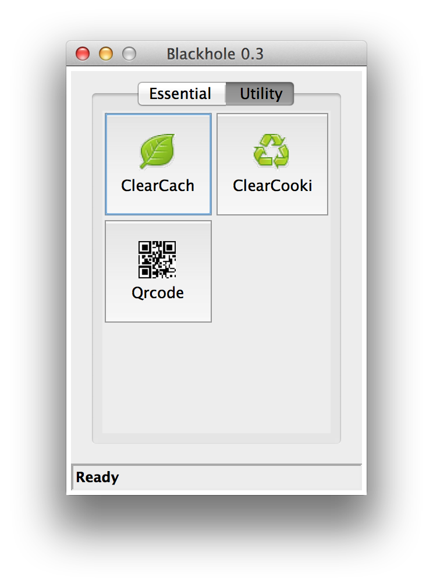

简介
Tue, Sep 16, 2014Blackhole是什么？
Blackhole是为解决前端移动开发问题诞生的一个proxy debugger。
它能让你做到: 
原理
原理请看这里的ppt。
windows安装包，下一步下一步。。。，桌面会生成app图标。
有两种方法启动：
双击图标启动
这时候使用全局配置文件。
拖动配置文件ini到桌面图标
这时候启动指定的配置文件。配置文件可以放到svn中共享。

主界面分为两个面板。

PC调试的时候点击左上角的Capture按钮，开启本机调试模式 激活后，会修改系统代理服务器，篡改浏览器请求。
移动调试点右上角的Tunnel按钮，并connect。激活后可以直接通过扫描二维码，请求就跑到你的pc上去了。
点击Log按钮可以出现请求响应列表，显示被捕获的请求。建议主要在chrome dev tools里面查看，这里只是偶尔定位问题用的。
为了在项目里面使用这个工具，可以点击config按钮修改配置。也可以直接编辑配置文件，然后重启软件。
这个面板放了一些web开发的常用小工具。

ClearCache 清除IE浏览器上的缓存
ClearCookie 清除IE的cookie
Qrcode 一个生成qrcode的小工具
以后会有更多 ^o^
示例一组规则定义如下：
转发到文件夹
http://%(host)s/css/ %(root)s/css/
转发到单个文件
http://res.html5.qq.com/topicshare/js/common1 %(build)s\js\common1.js
默认转发，免得被其他规则匹配上
伪造一个404请求
http://comic.html5.qq.com/cache.manifest *404:sorry
转发到一个concat配置文件
http://3gimg.qq.com/reader/vd+/js/reader.min.js %(root)s/meteor.cfg
转发到单个文件，再对文件跑个py文件处理下
http://comic.html5.qq.com/ E:\ComicWebServer\wsp\index.wsp comic_index.py
默认转发，但是使用两个中间件修改请求。加入清除缓存header, 然后修改返回加入weinre调试脚本
http://comic.html5.qq.com/ DEFAULT bustCache|weinre
示例如下：
tunnels =
test.mttweb.html5.qq.com www.example.com bustCache|weinre|fixcookie
这个配置通过test.mttweb.html5.qq.com域名把请求转发到你的pc上变成www.example.com的请求。
tunnel的server是可以配置的，鹅厂员工请使用
tunnel_server = mttweb.html5.qq.com:8080